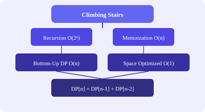

// O(n) time, O(1) space
def climbStairs(n):
if n <= 2: return n
a, b = 1, 2
for _ in range(3, n+1):
a, b = b, a + b
return bdef coinChange(coins, amount):
dp = [float('inf')] * (amount + 1)
dp[0] = 0
for coin in coins:
for x in range(coin, amount + 1):
dp[x] = min(dp[x], dp[x - coin] + 1)
return dp[amount] if dp[amount] != float('inf') else -1// C++  DP O(n²)
int lengthOfLIS(vector<int>& nums) {
vector<int> dp(nums.size(), 1);
int ans = 1;
for (int i = 1; i < nums.size(); i++) {
for (int j = 0; j < i; j++) {
if (nums[j] < nums[i])
dp[i] = max(dp[i], dp[j] + 1);
}
ans = max(ans, dp[i]);
}
return ans;
}| Problem | Pattern | Complexity |
|---|---|---|
| House Robber | DP[i] = max(DP[i-1], DP[i-2] + nums[i]) | O(n), O(1) |
| Decode Ways | DP with single and double digit checks | O(n), O(n) |
| Jump Game | Greedy reachable index | O(n), O(1) |
| Container With Most Water | Two pointers, area = width × min(h[l], h[r]) | O(n), O(1) |
| Subarray Sum Equals K | Prefix sum + hash map | O(n), O(n) |
| 3Sum | Sort + two pointers | O(n²), O(1) |
| Merge Intervals | Sort by start, merge overlapping | O(n log n), O(n) |
| Pascal's Triangle | Bottom-up row generation | O(n²), O(n²) |